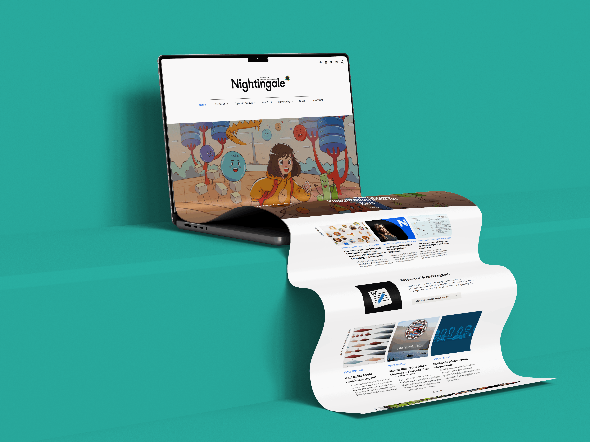
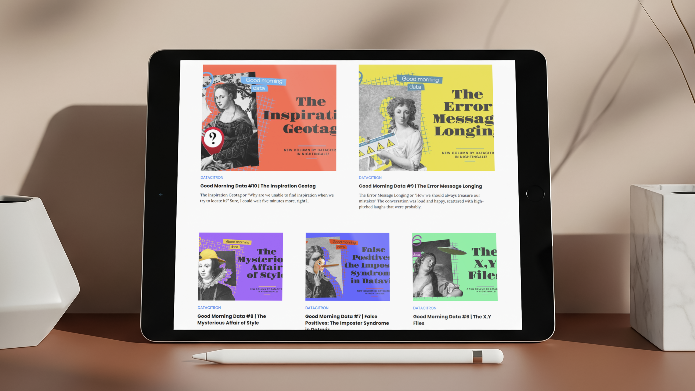

Nightingale
Nightingale is the preeminent journal of the Data Visualization Society, serving as a global platform for seasoned professionals, humble beginners, and fascinated hobbyists. From February 2024 to February 2026, I served as the Managing Editor, tasked with maintaining the digital publication’s output and expanding its reach within the international data viz community.

My role centered on the end-to-end management of a high-volume editorial calendar. I collaborated with nearly 150 unique contributors—ranging from industry leaders to emerging designers—to guide more than 200 complex data stories from initial pitch to final publication.
During my two-year tenure, Nightingale maintained its global footprint, bringing in 433,200 unique visitors culminating in 666,300 views. One article, Samantha Nicklaus' "Visualizing the History of Saturn and Its Rings," is now the third-most read article on Nightingale.
An additional highlight includes the 10-issue series "Good Morning Data," during which I had the privilege of editing my dear friend Julie Brunet, who stepped out of her illustrator-focused bubble to write a sincere and heartfelt collection of articles I would recommend to any creative individual.
